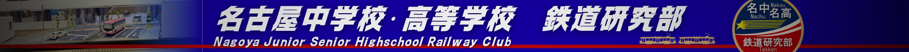

ようこそ！名古屋中高 鉄研ポータルへ
私たち鉄道研究部は、日本の主要インフラである「鉄道」を、歴史・技術・路線など多角的な視点から研究しています。ひとことに「鉄道」といっても、その楽しみ方は人それぞれ。部員それぞれの「好き」を大切にしながら、和気あいあいと活動しています。

私たち鉄道研究部は、日本の主要インフラである「鉄道」を、歴史・技術・路線など多角的な視点から研究しています。ひとことに「鉄道」といっても、その楽しみ方は人それぞれ。部員それぞれの「好き」を大切にしながら、和気あいあいと活動しています。

鉄研といえば、部員たちが力を合わせて作り上げる「大型鉄道模型」！個人では到底作れない、迫力満点のジオラマは、校内外を問わず多くの人を魅了しています。オープンキャンパスや文化祭では模型の運転体験も実施していますので、ぜひ足を運んでみてください！

活動は校内にとどまりません。過去にはバスの車庫見学や鉄道車両の貸し切り乗車など、なかなか個人では経験できない特別な体験を数多く行ってきました。鉄研だからこそ実現できる、ここでしか味わえない魅力が詰まっています！

鉄研の活動は、アナログな模型制作だけではありません。文化祭では、部員が自ら撮影・編集した本格的な鉄道プロモーションビデオを上映しています。さらに、模型運転体験の整理券システムや、今まさにご覧いただいているこのポータルサイトまで、すべて部員達の手で一から作り上げたものです！デジタルの分野でも、鉄研のこだわりは健在です。

部室には、長い歴史の中で受け継がれてきた貴重な資料が数多く保管されています。実際に使われていた方向幕やつり革などの鉄道部品をはじめ、本物の駅名看板、今はなき列車の写真や鉄道雑誌まで、当時の空気感をそのまま伝える品々が揃っています。こうした歴史の積み重ねを大切に守り、未来へとつないでいくことも、私たちの大切な使命です。